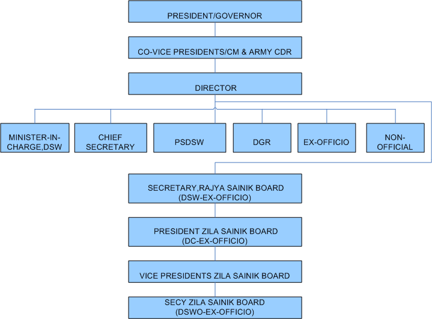

Home
|
RTI
|
Sitemap
|
FAQ
|
Latest Activities
|
Downloads
|
Contact Us
About Us
Brief
Aims
Previous Secretaries
Functions & Responsibility
Definition of Ex-Servicemen
Awards
Cash Award to Gallantry Awardees
Welfare Schemes
West Bengal Government
Ex-gratia Grant
Daughter's Marriage Grant
Old Age Pension
Redressel of Grievances of ESM/widow
Rajya Sainik Board, West bengal
Organisational Structure of RSB
Administrative Control Chart
Composition of Committee
KSB Welfare Schemes
Employment
West Bengal Government
Reservations
West Bengal ESM Recruitment Rules
West Bengal RSB/ZSB Secretary Selection Rules
DGR
Major Projects
Computerization of RSB & ZSB
Sainik Rest Houses
Grievances
Organisational Structure of RSB
